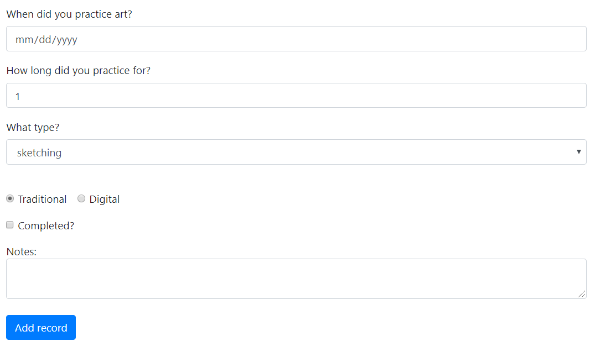
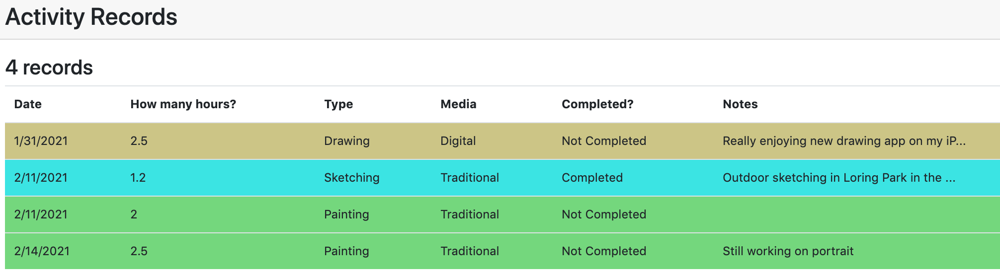
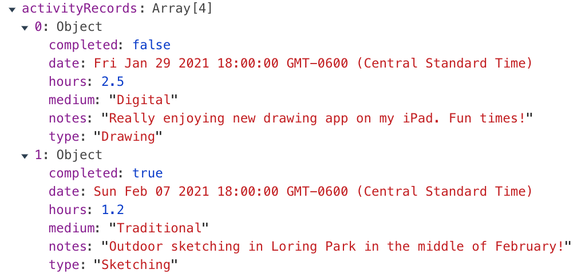

Follow the slides/videos to build the student sign in app, and the
activity tracker app. Ensure all the features are working as described.
You must start from the starter code repository - don't copy code in from the finished version.
There are evil bytes in the finished branch that will trip the grader
if you copy code from it. If the previous sentence doesn't make any
sense, then it means that if you submit the finished versions as your
own work, I will know and I will give you a zero grade. Let me know if you need help building these apps.
Part 1 Student Sign In, 6 points
Build the app as described in the powerpoint slides/Video. Make sure all the features work as described.
Part 2: Activity Tracker Features, 14 points
Make these changes to the activity tracker:
- The table row for each type of activity - drawing, sketching and
painting - should use v-bind so that rows for drawing have one class,
rows for sketching have another class, and rows for painting have
another class. Apply a different style to all of the drawing rows,
a different style to all of the painting rows, and another style to all
of the sketching rows.
- Tip: you can use v-bind:class=" ??? " in one of your HTML elements
to set the class. Replace ??? with some data from the Vue data.
- Add two new inputs to the form. Add a corresponding property in the Vue data and use v-model to connect them.
- Add another input to the form, a checkbox for completed (as opposed to work-in-progress).
- Add another text input or textarea to the form for the user to enter a note
about a record. For example 'experimenting with watercolors' or
'digital file saved at art.png'. Notes are optional, so there is no need
to check for them during validation.
- When the user adds a new record, include the
- completed value, as a boolean.
- note string
- Add two new columns in the table to display the completed and note
data. You can display the completed data as a checked/unchecked
checkbox, or the text "Completed" or "Not Completed".
- Create and use a method to limit the number of characters displayed
in a note to 40. If the text is truncated, add '...' to the end to
indicate it has been shortened. Your app should still save the entire
text.
Your new form will look something like this,

The table will look like this. You can use any colors and styles you
like. All the rows of one type are the same color. Completed/Not
Completed shown in the table. Notes longer than 40 characters are shown
with ... at the end but the full text is stored in the app.
The data for the first two records shown in this example is as
follows - there is more text than shown, and the completed data is
stored as true and false booleans.

Push your updates to GitHub.
To Submit:
GitHub link